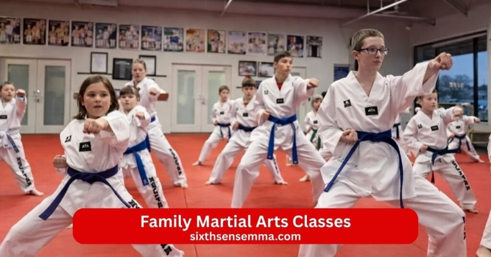
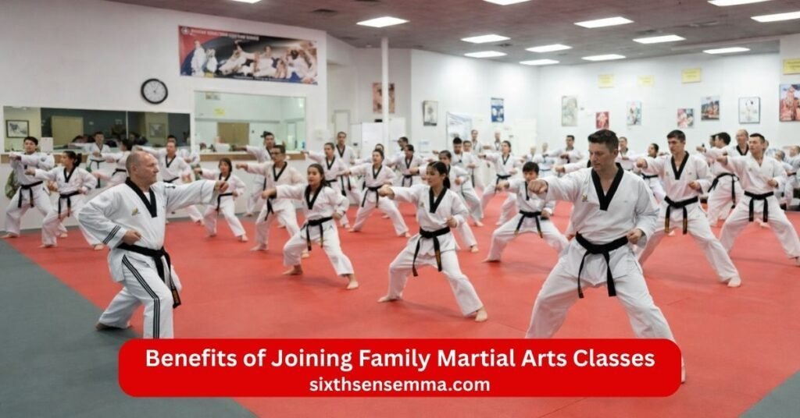
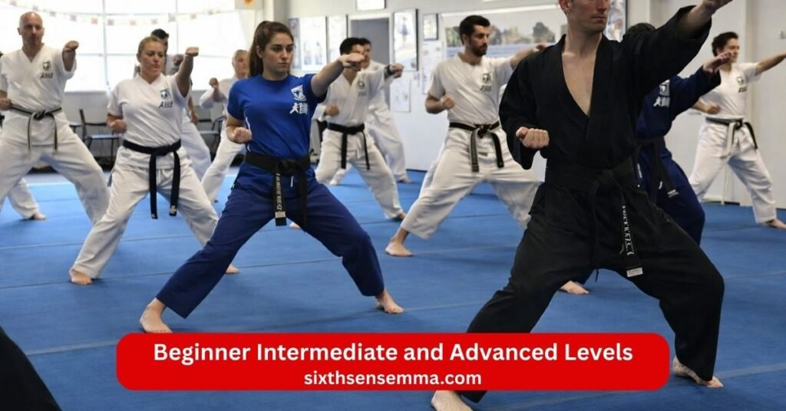

Family Martial Arts Classes Fun Safe & Confidence Building Training

Family Martial Arts Classes bring the whole family together to learn valuable skills stay active and build stronger bonds in a positive fun environment. At Sixth Sense MMA our martial arts academy martial arts school and martial arts center welcome kids and adults parents and kids teens and adults and kids and families to train together in classes for adults and kids. Certified instructors and experienced martial teachers guide martial arts program sessions with karate taekwondo jiu jitsu brazilian jiu jitsu gracie and more so everyone from little ones to 7 year old children and grown ups can learn martial arts at their own pace.
What You Will Learn in Family Martial Arts Classes
Family Martial Arts Classes bring kids and adults together to learn useful skills in a fun positive way. At our martial arts school parents and kids train together in the dojo or martial arts center while teens and adults join adult class sessions too. Certified instructors and experienced martial teachers show martial arts techniques from karate taekwondo jiu jitsu brazilian jiu jitsu gracie and more so everyone grows stronger. The martial arts program mixes children develop strong habits with practical self defense and physical fitness that help the whole family. Kids martial arts martial arts classes for kids karate classes taekwondo classes and adult martial arts all happen in a supportive environment where little ones feel safe and class helps everyone learn and grow.
Self Defense Techniques for Kids and Adults
Everyone learns real self defense and self defense skills that work in everyday situations. Kids practice simple escapes blocks and ways to stay safe from strangers or bully while adults work on stronger holds counters and control. Self defense moves stay age appropriate so 7 year old children use easy steps and older family members add power and speed. Instructors teach how to stay calm spot danger and defend without hurting others more than needed. Families walk away knowing they can protect themselves and each other with smart self defense techniques that go beyond kicks and punches.
Striking Kicking and Grappling Basics
Family Martial Arts Classes cover basic punch kicks and punches and safe grappling so the whole family gets well rounded training. Kids start with fun karate style strikes and taekwondo high kicks while parents add jiu jitsu ground work and brazilian jiu jitsu control. Everyone practices clean form timing and balance on the mat. Sensei break moves into small parts so beginners feel good and black belt hopefuls keep improving. These basics build strong bodies quick reflexes and the ability to handle different ranges in a fight or play.
Fitness Strength and Coordination Training
Martial arts training makes bodies stronger fitter and more coordinated for kids teens and adults. Kicks punch drills and movement games raise heart rate build muscle and improve balance. Kids active play helps little ones run jump and move better while parents gain endurance and tone. Get fit goals become easy because classes feel like fun not hard exercise. Families notice better energy sharper moves and more stamina in daily life from regular taking classes.
Discipline Focus and Confidence Building
Build confidence self confidence self discipline and self control happen naturally in every session. Kids learn to listen follow rules and finish tasks which helps focus in school. Adults practice patience and calm under pressure. Class helps everyone stay respectful bow show effort and support others. Sensei praise hard work so children develop strong character and families feel proud together. These lessons carry home school and friendships making everyone more sure of themselves.
Teamwork and Family Bonding Exercises
Train together in family class builds close bonds and teamwork. Parents and kids pair up for drills cheer each other and practice moves side by side. Kids together with teens and adults learn to help classmates encourage friends and work as a group. Practice together time creates laughs shared goals and memories that last. The supportive community in our martial arts studio makes every attend class feel like family time where everyone learn martial arts learn self defense and grow closer while staying active and safe.

Benefits of Joining Family Martial Arts Classes
Family Martial Arts Classes give the whole family a chance to grow stronger together in body and mind. At our martial arts school parents and kids train together in the dojo or martial arts center while teens and adults join adult class sessions too. Kids martial arts martial arts classes for kids karate classes taekwondo classes and adult martial arts all happen side by side so everyone shares the same positive space. Certified instructors and experienced martial teachers guide martial arts techniques from karate taekwondo jiu jitsu brazilian jiu jitsu gracie and more. The martial arts program helps children develop strong habits get fit and keep kids active while class helps parents feel more connected and energized. Families notice real changes that make daily life better.
Improved Physical Fitness for the Whole Family
Family Martial Arts Classes improve physical fitness for everyone from little ones to teens and adults. Kicks and punches drills movement games and safe grappling raise heart rate build muscle and boost stamina. Kids become more active run jump and move with better balance while parents gain strength endurance and flexibility. The martial arts training feels like play so taking classes does not seem like hard work. Families end up healthier with more energy sharper coordination and the habit of staying active together. Regular sessions help everyone get fit tone up and handle daily tasks with ease.
Increased Confidence and Self Esteem in Children and Adults
Build confidence self confidence and self esteem grow naturally for kids parents and teens in every class. Kids master new moves earn praise from sensei and see themselves improve which makes them stand taller and try harder in school or with friends. Adults push through challenges feel capable and carry that quiet strength into work and home life. Self discipline self control and the ability to stay calm under pressure add to the inner pride everyone feels. Families share these wins celebrate small steps and watch each other shine. The supportive community and encouragement from instructors make sure no one feels left behind.
Enhanced Communication and Cooperation Among Family Members
Train together in family class strengthens how family members talk listen and work as a team. Parents and kids pair up for drills hold pads for each other and cheer successes which opens up better conversations at home. Kids together with teens and adults learn to give clear instructions wait for turns and support classmates. Practice together time creates shared laughs inside jokes and mutual respect. Families leave class feeling closer more patient and quicker to help one another. These moments build lasting bonds that show up in everyday family life.
Fun and Engaging Way to Stay Active Together
Family Martial Arts Classes turn exercise into something the whole family looks forward to instead of a chore. Kicks and punches games partner work and fun challenges keep energy high and smiles big. Kids love the action parents enjoy moving with their children and teens find it cool to share with siblings or mom dad. The martial arts experience mixes learning self defense self defense skills and self defense techniques with play so everyone stays engaged. Families bond over shared goals laugh at funny moments and motivate each other to show up. This fun active time together relieves stress creates memories and makes staying healthy feel natural and enjoyable.
Who Can Join Our Family Martial Arts Classes
Our Family Martial Arts Classes welcome everyone in the family no matter age size or experience level. At our martial arts school martial arts center or martial arts academy kids and adults parents and kids teens and adults all find a place to train together. Certified instructors and experienced martial teachers make every martial arts program safe fun and right for you. Kids martial arts martial arts classes for kids karate classes taekwondo classes adult martial arts and classes for adults and kids happen in a supportive environment where little ones feel included and grown ups stay challenged. Anyone interested in learning a martial art can start with a free class and see how the martial arts experience fits the whole family.
Children Teens and Adults of All Fitness Levels
Children teens and adults of every fitness level join Family Martial Arts Classes without worry. Young kids start with simple punch kicks and fun games that build coordination balance and energy. Teens work on stronger self defense moves grappling and focus that helps them in school and sports. Adults get full body workouts practical self defense skills and ways to relieve stress while improving strength flexibility and stamina. Age appropriate training means 7 year old children move at their pace and older family members push harder when ready. Beginners learn basics step by step while those with more experience add advanced martial arts techniques. Everyone gets stronger fitter and more active together.
Parents Looking to Bond with Their Kids
Parents join Family Martial Arts Classes to spend real quality time with their kids and teens. Train together in family class lets moms dads and children pair up hold pads cheer each other and laugh through drills. Parents and kids share goals celebrate small wins and encourage one another which builds closer relationships. Sensei create moments where families practice side by side talk more openly and support each other. Many parents say these classes become the highlight of the week because they create shared memories and stronger bonds that last long after class ends.
Families Seeking a Healthy and Active Lifestyle
Whole families choose Family Martial Arts Classes to build a healthy active routine everyone enjoys. Instead of separate activities kids and families come together to get fit stay moving and make exercise part of family life. Kids active play keeps energy high while parents gain better physical fitness and self control. Regular taking classes helps families eat better sleep well and feel more positive overall. The martial arts studio becomes a place where everyone looks forward to going together which makes healthy habits stick naturally. Families leave with more energy better moods and the habit of staying active as a team.
Beginners and Experienced Martial Arts Practitioners
Beginners and experienced martial artists all fit in Family Martial Arts Classes. Newcomers with no background in karate taekwondo jiu jitsu brazilian jiu jitsu or any martial art start from the ground up with clear simple steps and lots of encouragement. Black belt level students or those with years of practice join separate classes or advanced groups to refine technique add power and work on details. Instructors adjust every drill so beginners feel comfortable and experienced ones stay challenged. Families mix levels too with parents sometimes helping kids or learning alongside them. This setup lets everyone learn martial arts learn self defense and progress at their own speed while supporting each other.
Class Schedule and Program Options for Family Martial Arts Classes
Our Family Martial Arts Classes fit busy family schedules so parents and kids teens and adults can attend class regularly without hassle. At our martial arts school martial arts center and martial arts academy we offer classes for adults and kids martial arts classes for kids karate classes taekwondo classes adult martial arts and family class options. Certified instructors and experienced martial teachers run martial arts program sessions with age appropriate training from karate taekwondo jiu jitsu brazilian jiu jitsu gracie and more. Kids little ones and 7 year old children join children class while families train together or take separate classes as needed. We make it easy to start with a free class so you see how the martial arts experience works for your family.
Flexible Timings for Weekdays and Weekends
Flexible timings let families pick slots that match school work and weekend plans. Weekday morning early classes help busy parents start the day active evening sessions suit after school or after work hours and weekend mornings or afternoons give extra time for longer family practice. Daily options mean you can come once a week or multiple times depending on your routine. Sensei keep every lesson energetic focused and fun so no one feels rushed. This setup helps kids stay consistent parents make time and the whole family builds habits without stress. Many families say these choices make martial arts part of their weekly routine easily.

Beginner Intermediate and Advanced Levels
We offer beginner intermediate and advanced levels so every family member trains at the right spot. Beginners start with basic punch kicks stance and simple self defense moves that feel safe and clear. Intermediate students add combos timing partner work and stronger self defense techniques while advanced practitioners refine martial arts techniques speed power and strategy toward black belt goals. Instructors group by skill and age groups so kids teens and adults progress without feeling held back or pushed too hard. Families with mixed levels can join together in family class or split into separate classes then share what they learned. This structure keeps everyone motivated growing and excited to come back.
Private Family Training Sessions
Private family training sessions give your family one on one time with sensei to focus exactly on what you need. These sessions let parents and kids work on specific moves self defense family drills or bonding exercises at your own pace. Instructors tailor everything to your goal whether helping a shy child gain confidence teaching practical self defense for the whole family or sharpening technique for more experienced members. You set the time day and focus so it fits your schedule perfectly. Many families use private sessions to speed up progress overcome challenges or simply enjoy extra family time in a quiet supportive space. It adds a personal touch to the regular martial arts training.
Free Trial Class for Families
Try Family Martial Arts Classes with no cost through our free trial class for families. Come as a group parents and kids together try basic kicks and punches fun games partner drills and simple self defense in a welcoming dojo. Sensei explain everything make everyone feel comfortable answer questions and show how classes work for different ages. No pressure to sign up right away we just want your family to experience the energy laugh a little and see if it feels right. Many families try the free class feel the positive vibe and decide to join because they see immediate benefits of training like better focus self discipline and fun active time together. It takes one session to start your martial arts experience.
Why Choose Sixth Sense MMA Family Martial Arts Classes
Sixth Sense MMA makes Family Martial Arts Classes the best choice for families who want safe fun and real progress together. Our martial arts academy martial arts school and martial arts center welcome kids and adults parents and kids teens and adults and kids and families in a supportive community where everyone feels at home. Certified instructors and experienced martial teachers guide martial arts program sessions with karate taekwondo jiu jitsu brazilian jiu jitsu gracie and more so families train together build stronger bonds and learn and grow. Little ones 7 year old children kids teens and parents all find their place in classes for adults and kids martial arts classes for kids adult martial arts and family class options. Families choose us because we focus on self defense physical fitness self discipline self confidence and positive habits that help everyone thrive.
Certified Instructors Experienced in Teaching All Age Groups
Our certified instructors and experienced martial teachers know how to teach every age from little ones to teens and adults. They hold proper training in karate taekwondo jiu jitsu brazilian jiu jitsu and family teaching methods so instruction stays clear safe and effective. Sensei adjust every drill explain moves simply and give personal feedback whether working with a young child on basics or helping an adult refine self defense techniques. They understand how children develop strong habits focus in school and gain self control while adults build self confidence and relieve stress. This wide experience means every family member gets the right guidance to succeed and feel supported.
Safe Supportive and Fun Environment for Families
We create a safe supportive and fun space where families feel comfortable from the first day. The dojo and martial arts studio stay clean well lit and welcoming with rules that keep everyone protected during punch kicks and punches grappling and partner work. The supportive community encourages cheering clapping and helping each other so parents and kids laugh together and build trust. Classes mix action with smiles games and positive energy making martial arts experience enjoyable for all. Families leave feeling happy connected and excited to return.
Age Appropriate Martial Arts Curriculum for Kids and Adults
Our martial arts curriculum stays age appropriate so kids teens and adults train in ways that match their bodies minds and needs. Young children start with fun games simple self defense moves and basic kicks to build coordination confidence and listening skills. Teens add stronger self defense strategy and focus that helps school and daily life. Adults work on practical self defense skills power endurance and stress relief with moves that fit grown up strength. Separate classes or combined family class options let everyone progress at the right level while sharing the experience. This smart approach helps kids active stay engaged parents stay challenged and the whole family learn martial arts together safely.
Programs Designed for Beginners and Advanced Students
Programs fit beginners and advanced students so no one feels out of place. Beginners learn step by step with easy explanations lots of encouragement and focus on basics like stance balance and simple self defense. Advanced students or those aiming for black belt add complex martial arts techniques timing combos and deeper strategy in higher level groups. Instructors place everyone correctly adjust difficulty and help families with mixed levels join family class or split as needed. This setup keeps beginners motivated experienced ones improving and families growing side by side. Everyone build confidence build discipline and sees clear progress no matter where they start.
Contact US
If you want to learn more about Family Martial Arts Classes at Sixth Sense MMA check class schedules book a free class ask about membership options or get details on classes for adults and kids just reach out. We are happy to answer questions from parents and kids teens and adults or kids and families who are interested in learning a martial art. Our certified instructors and team make it easy for families in the area to start martial arts training together in a supportive environment.
- 817 S MacArthur Blvd #100 Coppell TX 75019 United States
- (469) 972 7800
- info@sixthsensemma.com
Conclusion
Family Martial Arts Classes at Sixth Sense MMA offer families a powerful way to grow stronger closer and healthier together. From the first free class parents and kids teens and adults step into our dojo martial arts studio and martial arts center to train together in a supportive community that feels warm and welcoming. Certified instructors and experienced martial teachers guide martial arts program sessions with karate taekwondo jiu jitsu brazilian jiu jitsu gracie and more so everyone from little ones to 7 year old children and grown ups learns self defense self defense skills self defense techniques beyond kicks and punches in age appropriate ways.
Follow Us on Social Media
Stay connected with Sixth Sense MMA through our social media channels. Follow us for class updates, training tips, and a closer look at our self defense community.
FAQ’s
Many Christians and people of faith see martial arts as acceptable or even positive when practiced for health self discipline fitness or self defense. The Bible does not directly mention martial arts but it speaks positively about physical training in 1 Timothy 4:8 where it says bodily exercise has some value. Stories of warriors like David who used skill and strength to protect others show that learning to defend yourself or others can align with protecting the innocent. Most views say martial arts is fine if it builds character, humility, respect and does not promote violence aggression or pride. Some denominations discourage it if it involves Eastern spiritual elements but many churches run martial arts programs for youth to teach discipline and confidence. It comes down to intent and how you approach it.
No age is truly too late to start martial arts. People begin in their 40s 50s 60s 70s and even older and still gain real benefits like better balance, strength flexibility coordination and mental sharpness. Older beginners often focus on low impact styles or modified training to stay safe and healthy. Good schools have instructors who adapt classes for seniors with joint friendly moves, slower paces and emphasis on mobility rather than hard sparring. Many report improved quality of life, reduced fall risk and more confidence at any age. The key is starting gently listening to your body and choosing a welcoming gym. Consistency matters more than starting young.
Yes, karate can be very good for kids with ADHD. The structured routines repetitive drills clear rules and focus on one move at a time help improve attention impulse control and self regulation. Many parents and studies note that karate classes build self discipline, self control, better focus and confidence which often carry over to school and home. Physical activity burns excess energy, reduces restlessness and releases endorphins for better mood. Good instructors use positive reinforcement short instructions and break tasks into small steps which suit ADHD brains. It also teaches respect, patience and goal setting through belt ranks. Results vary by child and school but many families see noticeable improvements in behavior, concentration and self esteem.
The idea of exactly four main martial arts varies by context but commonly people refer to four foundational or widely recognized ones:
Karate (striking from Okinawa Japan focusing on punches kicks blocks and forms)
Judo (grappling throws and ground control from Japan emphasizing leverage)
Taekwondo (high fast kicks from Korea with strong emphasis on leg techniques)
Brazilian Jiu Jitsu (ground fighting submissions and control from Brazil adapted from Judo). These four cover striking kicking, throwing and ground work making them a solid base for well rounded training. Some lists swap in Muay Thai boxing or wrestling but karate, judo, taekwondo and bjj often get named as core modern ones.
In Christian teaching the sin God never forgives is blasphemy against the Holy Spirit often called the unforgivable sin from Mark 3:28 29 and Matthew 12:31 32. Jesus said all sins and blasphemies can be forgiven except blasphemy against the Holy Spirit which has no forgiveness forever. Many theologians explain it as a persistent hardened rejection of the Holy Spirit’s work refusing to repent and attributing God’s power to evil even after clear evidence. It is not a one time act but a continual willful state of heart that rejects salvation. Most Christians believe if someone worries they committed it they probably have not because true repentance shows the heart is not hardened. God forgives all who sincerely turn to Him through Jesus.
No clear evidence shows Jesus was a martial artist in the modern sense. The Bible does not describe Him training in fighting styles like karate judo or any formal martial art. Some speculate based on His carpentry work (physical strength) walking long distances or using a whip to drive out money changers in the temple but these do not equal martial arts training. Others point to His calm under pressure wisdom in conflict and teaching to turn the other cheek as more about spiritual strength than physical combat. A few modern books or theories claim hidden martial arts influences in His life but mainstream scholars see no support for this. Jesus focused on teaching love forgiveness and spiritual authority not fighting techniques.
Barack Obama does not have formal training in martial arts as far as public records show. He played basketball regularly during his presidency and stayed active with workouts including weights running and cardio but no reports confirm he practiced styles like karate, taekwondo jiu jitsu or boxing. Some photos show him playfully shadowboxing or doing light moves with kids but these appear casual, not serious training. He mentioned enjoying sports and fitness but never claimed martial arts experience. Any claims otherwise seem based on rumors or jokes without evidence.
No, 70 is not too old to start martial arts. Many people begin in their 70s and 80s and enjoy improved mobility, balance, strength coordination and mental sharpness. Styles like tai chi karate taekwondo or gentle jiu jitsu adapt well for seniors with slower paces, low impact moves and focus on health over power. Good instructors modify classes, use chairs for support and emphasize safety to prevent injury. Benefits include better fall prevention, joint health confidence and social connection. Doctors often encourage it for active aging if cleared medically. Start slowly, choose a welcoming school and listen to your body.
Neither karate nor Taekwondo is universally better; it depends on the child, the school and goals. Karate often emphasizes strong stances, powerful punch blocks and practical self defense with good hand techniques and forms that build focus, discipline and control. Taekwondo focuses on high fast kicks, agility , flexibility and speed with flashy leg work that improves coordination, athleticism and confidence. Both teach respect, self control and self defense. Look at the specific gym instructor’s class style and how the child responds. Try a free class in both if possible. A good school matters more than the style name.
The hardest martial art depends on the person but many rank these as among the toughest:
Muay Thai (brutal conditioning shin kicks elbows knees and clinch work cause pain and require extreme toughness)
Brazilian Jiu Jitsu (long exhausting rolls grip strength mental pressure and constant problem solving under fatigue)
Sambo or wrestling (intense physical grind takedowns and ground control demand endurance and grit)
Kyokushin Karate (full contact sparring body conditioning and mental fortitude to take hard hits). Hardness comes from physical pain, mental strain, learning curve and time needed. What feels hardest varies by body type, personality and what you struggle with most.
Train with us in Coppell
The first class is free. Shorts, a t-shirt and a water bottle. We lend the rest.
Book a free class